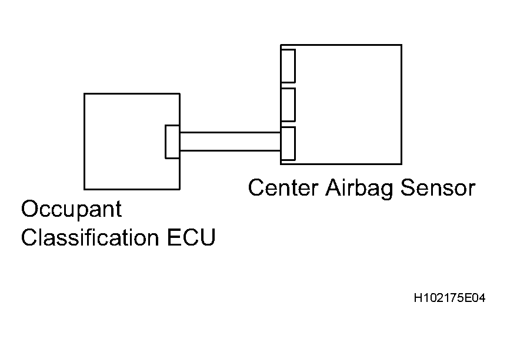
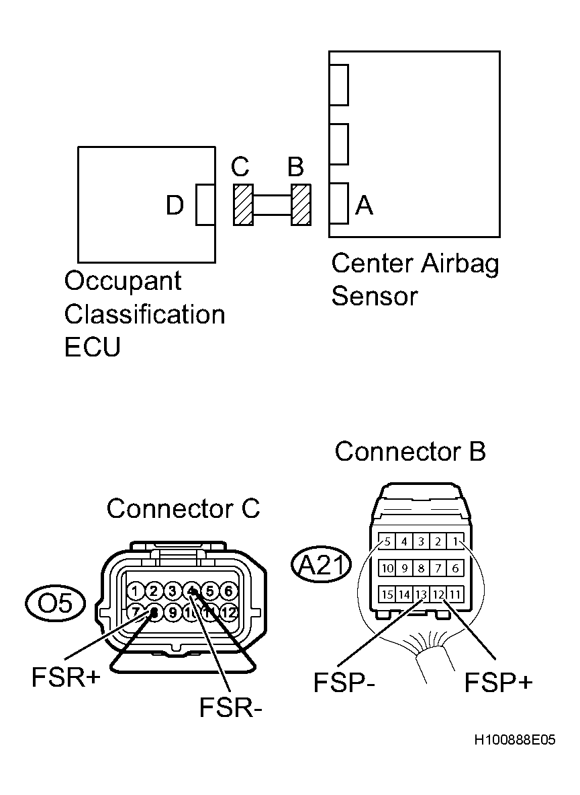

Inspection Procedure
- CHECK FOR DTC (CENTER AIRBAG SENSOR ASSEMBLY)
- Turn the ignition switch ON, and wait for at least 60 seconds.
- Clear the DTCs stored in the memory (see DTC CHECK / CLEAR ).
- Turn the ignition switch OFF.
- Turn the ignition switch ON, and wait for at least 60 seconds.
- Check for DTCs (see DTC CHECK / CLEAR
).
OK:
DTC B1650/32 is not output.
HINT:
DTCs other than B1650/32 may be output at this time, but they are not related to this check.
OK : USE SIMULATION METHOD TO CHECK

Courtesy of © TOYOTA, LICENSE AGREEMENT TMS1002NG : Go to Next Step
- CHECK FOR DTC (OCCUPANT CLASSIFICATION ECU)
- Turn the ignition switch ON, and wait for at least 10 seconds.
- Using the intelligent tester, check for DTCs of the occupant classification ECU (see DTC CHECK / CLEAR
).
OK:
DTC is not output.
NG : GO TO DTC CHART (OCCUPANT CLASSIFICATION SYSTEM)
OK : Go to Next Step
- CHECK CONNECTION OF CONNECTOR
- Turn the ignition switch OFF.
- Disconnect the cable from the negative (-) battery terminal, and wait for at least 90 seconds.
- Check that the connectors are properly connected to the center airbag sensor and the occupant classification ECU.
OK:
The connectors are properly connected.
NG : CONNECT CONNECTOR
OK : Go to Next Step
- CHECK FLOOR WIRE (FOR OPEN)
- Disconnect the connectors from the center airbag sensor and the occupant classification ECU.
- Using a service wire, connect terminals O5-8 (FSR+) and O5-4 (FSR-) of connector "C".NOTE: Do not forcibly insert the service wire into the terminals of the connector when connecting them.
- Measure the resistance of the wire harness side connectors.
Standard resistance
TESTER CONNECTION - SPECIFIED CONDITION (RESISTANCE)Terminal Connection Specified Condition A21-12 (FSP+) - A21-13 (FSP-) Below 1 Ω
NG : REPAIR OR REPLACE FLOOR WIRE

Courtesy of © TOYOTA, LICENSE AGREEMENT TMS1002OK : Go to Next Step
- CHECK FLOOR WIRE (FOR SHORT)
- Disconnect the service wire from connector "C".
- Measure the resistance of the wire harness side connector.
Standard resistance
TESTER CONNECTION - SPECIFIED CONDITION (RESISTANCE)Terminal Connection Specified Condition A21-12 (FSP+) - A21-13 (FSP-) 1 MΩ or higher
NG : REPAIR OR REPLACE FLOOR WIRE
OK : Go to Next Step
- CHECK FLOOR WIRE (TO B+)
- Connect the cable to the negative (-) battery terminal, and wait for at least 2 seconds.
- Turn the ignition switch ON.
- Measure the voltage of the wire harness side connector.
Standard voltage
TESTER CONNECTION - SPECIFIED CONDITION (VOLTAGE)Terminal Connection Specified Condition A21-12 (FSP+) - Body ground Below 1 V A21-13 (FSP-) - Body ground
NG : REPAIR OR REPLACE FLOOR WIRE
OK : Go to Next Step
- CHECK FLOOR WIRE (TO GROUND)
- Turn the ignition switch OFF.
- Disconnect the cable from the negative (-) battery terminal, and wait for at least 90 seconds.
- Measure the resistance of the wire harness side connector.
Standard resistance
TESTER CONNECTION - SPECIFIED CONDITION (RESISTANCE)Terminal Connection Specified Condition A21-12 (FSP+) - Body ground 1 MΩ or higher A21-13 (FSP-) - Body ground
NG : REPAIR OR REPLACE FLOOR WIRE
OK : Go to Next Step
- CHECK CENTER AIRBAG SENSOR ASSEMBLY
- Turn the ignition switch OFF.
- Disconnect the cable from the negative (-) battery terminal, and wait for at least 90 seconds.
- Replace the center airbag sensor (see ON-VEHICLE INSPECTION
).
HINT:
Perform the inspection using parts from a normal vehicle when possible.
- Connect the connectors to the center airbag sensor.
- Connect the cable to the negative (-) battery terminal, and wait for at least 2 seconds.
- Turn the ignition switch ON, and wait for at least 60 seconds.
- Clear the DTCs stored in the memory (see DTC CHECK / CLEAR ).
- Turn the ignition switch OFF.
- Turn the ignition switch ON, and wait for at least 60 seconds.
- Check for DTCs (see DTC CHECK / CLEAR
).
OK:
DTC B1650/32 is not output.
HINT:
DTCs other than B1650/32 may be output at this time, but they are not related to this check.
OK : USE SIMULATION METHOD TO CHECK
NG : Go to Next Step
- REPLACE OCCUPANT CLASSIFICATION ECU
- Turn the ignition switch OFF.
- Disconnect the cable from the negative (-) battery terminal, and wait for at least 90 seconds.
- Replace the occupant classification ECU (see REMOVAL ).
NEXT
- PERFORM ZERO POINT CALIBRATION
- Connect the cable to the negative (-) battery terminal, and wait for at least 2 seconds.
- Connect the intelligent tester to the DLC3.
- Turn the ignition switch ON.
- Using the intelligent tester, perform the zero point calibration (see INITIALIZATION
).
HINT:
"COMPLETED" is displayed on the tester.
NEXT
- PERFORM SENSITIVITY CHECK
- Using the intelligent tester, perform the sensitivity check (see INITIALIZATION
).
Standard value:
27 to 33 kg (59.52 to 72.75 lb)
NEXT : END
- Using the intelligent tester, perform the sensitivity check (see INITIALIZATION
).